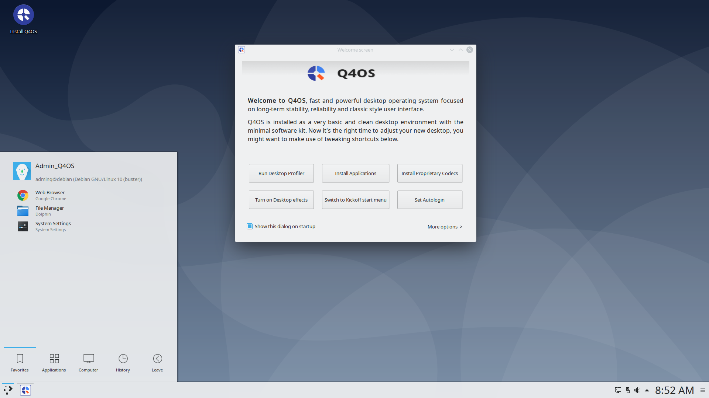
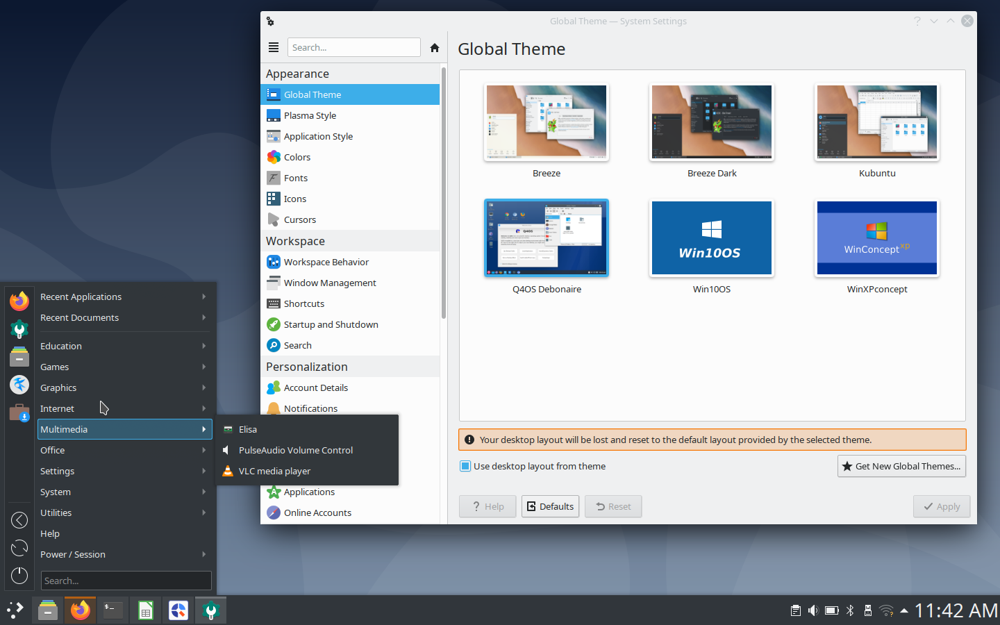
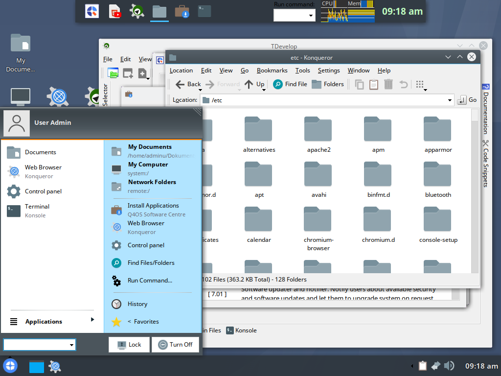
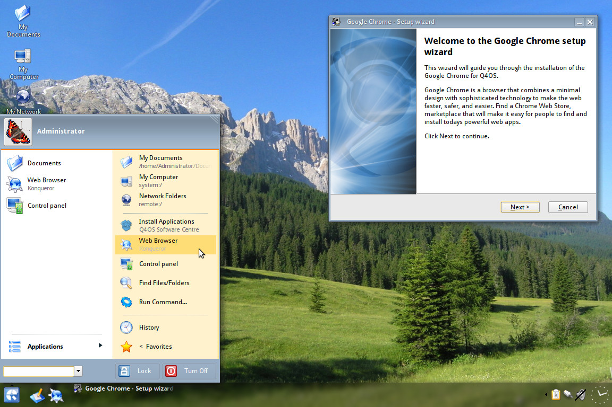
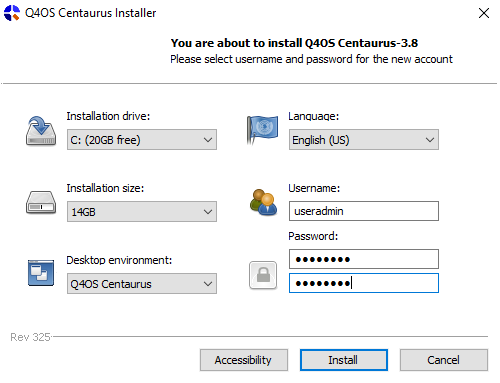
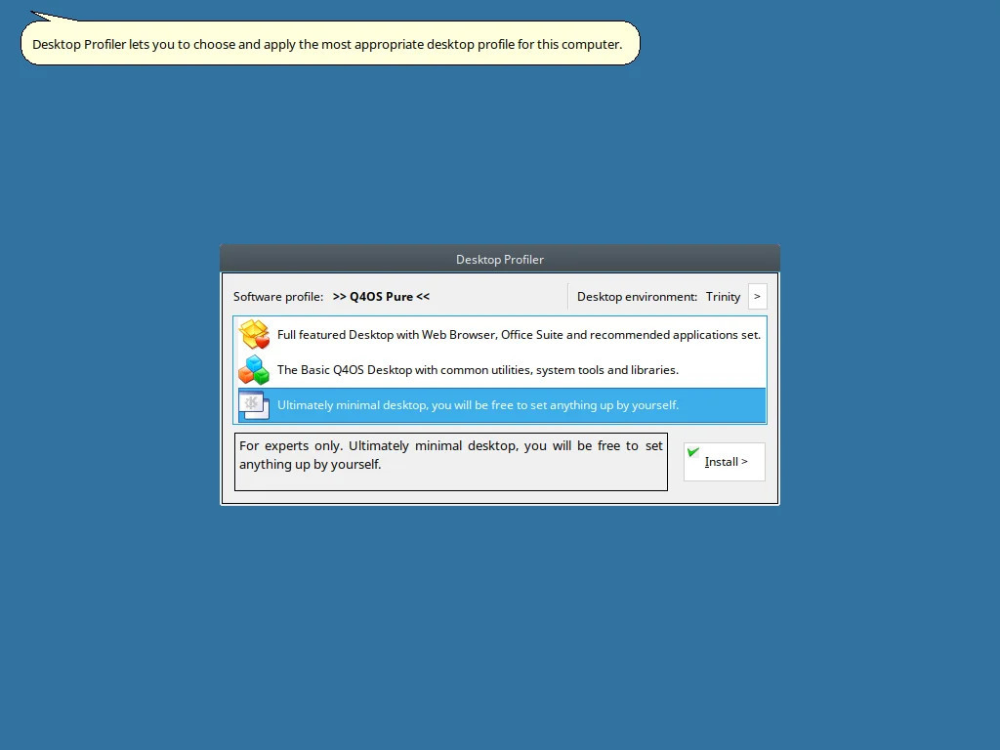

Welcome to Q4OS
fast and friendly, desktop oriented operating system based on Debian Linux. Providing a set of dedicated utilities and specific optimizations, combined with a focus on getting a productive system easily. This makes it ideal for people who want to get a working environment tailored to individual needs and preferences. From this perspective, Q4OS is suitable for both newcomers as well as experienced computer users.
Why Q4OS ?

Lean and fast
thanks to unique Q4OS tools a user can rather easily achieve setup of a fitted system eliminating superfluous components and applications. Therefore Q4OS performs faster and more efficient, doesn't exploit memory and computing resources with useless tasks and processes .. read more
thanks to unique Q4OS tools a user can rather easily achieve setup of a fitted system eliminating superfluous components and applications. Therefore Q4OS performs faster and more efficient, doesn't exploit memory and computing resources with useless tasks and processes .. read more
Rock stable
the goal is to provide long-term supported system receiving security updates. This is exactly what Debian base guarantees. We prefer the Debian development model to keep the core system as immutable as possible. It results in a reliable and stable system that you can definitely rely on .. read more
the goal is to provide long-term supported system receiving security updates. This is exactly what Debian base guarantees. We prefer the Debian development model to keep the core system as immutable as possible. It results in a reliable and stable system that you can definitely rely on .. read more


Visual themes, Lookswitcher
would you like to change the default desktop look and feel ? Install Lookswitcher from the software center to get a few original desktop themes and a one-click tool to easily switch between them. Select a theme you like and enjoy the new desktop appearance.
would you like to change the default desktop look and feel ? Install Lookswitcher from the software center to get a few original desktop themes and a one-click tool to easily switch between them. Select a theme you like and enjoy the new desktop appearance.
Trinity desktop option
lightweight, fast, efficient, in many ways surpasses competition. In our opinion, a highly underrated desktop environment. Mainstream Linux distributions don't support Trinity at all, but we love it so much, that Trinity is even a dedicated download option, right after the default Plasma desktop.
lightweight, fast, efficient, in many ways surpasses competition. In our opinion, a highly underrated desktop environment. Mainstream Linux distributions don't support Trinity at all, but we love it so much, that Trinity is even a dedicated download option, right after the default Plasma desktop.


Dual desktop ready
a unique alternative that makes possible setting up multiple desktop environments, typically Plasma and Trinity, side by side without interfering with each other. Carefully separated, ready to run as required, waiting for action. Just select the desired one at login time .. read more
a unique alternative that makes possible setting up multiple desktop environments, typically Plasma and Trinity, side by side without interfering with each other. Carefully separated, ready to run as required, waiting for action. Just select the desired one at login time .. read more
Windows installer
an exclusive way to put Linux alongside Windows. Just run a setup wizard from within Windows and install Q4OS as easily as any other application. Although installed within windows, Q4OS kernel can take full control of the hardware. That is much more efficient than running a virtual machine .. read more
an exclusive way to put Linux alongside Windows. Just run a setup wizard from within Windows and install Q4OS as easily as any other application. Although installed within windows, Q4OS kernel can take full control of the hardware. That is much more efficient than running a virtual machine .. read more


More features
in addition to the above and what to expect from a regular Debian system, Q4OS has got other interesting features. Native Q4OS utilities such as Desktop profiler and Software center, installers for third party applications, support for x86/32bit as well as ARM architecture and even more.
in addition to the above and what to expect from a regular Debian system, Q4OS has got other interesting features. Native Q4OS utilities such as Desktop profiler and Software center, installers for third party applications, support for x86/32bit as well as ARM architecture and even more.